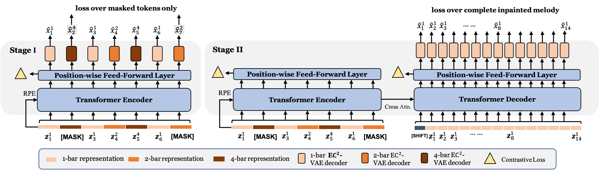
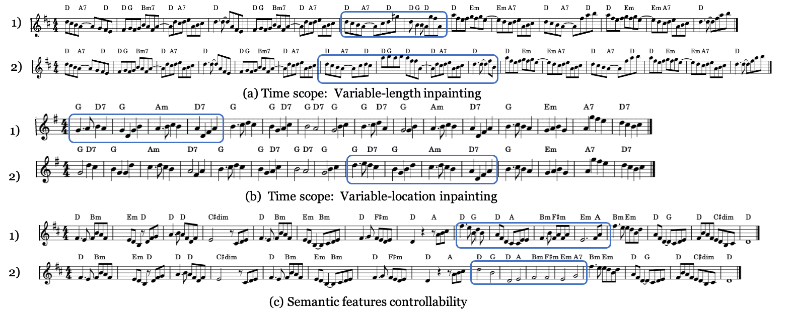

Here, you will find demos of our paper.
Our inpainting model is a BART-like language model which has a Transformer encoder connected to an autoregressive Transformer decoder. To effectively encode long music sequences, the language model regard the observational music data as a sequence of mixed high level representations. The encoder is first pre-trained and later jointly trained with the decoder. 
In our paper, we elaborate on how the proposed model inpaints by several inference experiments as follows:
Time scope:
-
Variable-position inpainting.
-
Variable-length inpainting.
Semantic features:
-
Rhythm specification.
We show some demos in the inference section. The generated parts are inllustrated in seconds (s).
Time scope: Variable-position inpainting
An example of a 16-bar melody. Our model inpaints 1-4th, 5-8th, 9-12th or 13-16th bars seperately.
Inpainting 1-4th bars (from 0s to 8s).
Inpainting 5-8th bars (from 8s to 16s).
Inpainting 9-12th bars (from 16s to 24s).
Inpainting 12-16th bars (from 24s to 32s).
Time scope: Variable-length inpainting
Examples show that the comparison between our model and the baseline in terms of infilling missing spans with different numbers of bars. In the same case, the context in the first 6 bars and the last 6 bars is the same, the models inpaint the middle 2 bars (12-16s) or 4 bars (12s-20s).
Case 1
Inpainting 2 bars (from 12s to 16s).
Our proposed model.
Baseline
Our proposed model without contrastive loss.
Inpainting 4 bars (from 12s to 20s).
Our proposed model.
Baseline
Our proposed model without contrastive loss
Case 2
Inpainting 2 bars (from 12s to 16s).
Our proposed model.
Baseline
Our proposed model without contrastive loss
Inpainting 4 bars.
Our proposed model (from 12s to 20s).
Baseline
Our proposed model without contrastive loss
3.Irregularly-corrupted context attending
Our proposed model attends to masked contexts and infills missing segments with different total length. The positions of generated parts are sampled.
Total 10 bars.
Total 12 bars.
Diversified generation
4. Mixed-level representation sampling
Our model generate diversified versions of 'Danny Boy' under mixed-level sampling. The inpanted part is from 16s to 24s.
Version 1.
Version 2.
Version 3.
Version 4
Version 5:
5. Controllable generation in number of notes in one measure.
Here, we change conditioned rhythm representation from the melody inpainted by our proposed model to the other one by applying the EC2VAE model once again, the operation varies the number of inpainted notes within one bar.
Case 1 The melody generated from our model. The inpainted part is from 16s to 24s Target rhythm Target number of notes in the inpainted part. Case 2 The melody generated from our model. The inpainted part is from 24s to 32s Target rhythm Target number of notes in the inpainted part.Below, we show the music score of some cases: 